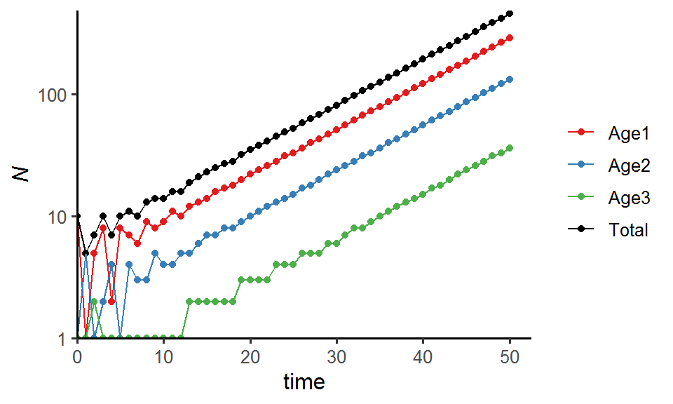

Week 5
Lecture in a nutshell
- Model derivation:
- Model diagram: a sequence of age classes connected through arrows of survival probability (\(Si\)) and fecundity (\(fi\))
- Assumptions:
- Closed population
- Individuals within each age class are identical
- Critical rates are age-dependent BUT not time- or density-dependent (unlimited resources)
- Discrete age classes; individuals do not remain in the same age class over time
- Model dynamics (linear algebra):
- A simple example:
- Age class at time t: \(\vec{n}_{t} = \begin{vmatrix}n_{1.t} \\ n_{2.t} \\ n_{3.t} \end{vmatrix}\)
- Leslie matrix \(L\) (transition matrix): \(\begin{vmatrix}f_{1} & f_{2} & f_{3}\\S_{1} & 0 & 0\\0 & S_{2} & 0 \end{vmatrix}\)
- Age class at time t+1: \(\vec{n}_{t+1} = L \cdot \vec{n}_{t}\)
- Eigenanalysis: eigenvalues (\(\lambda\)) and eigenvectors (\(\vec{u}\))
- \(L\vec{u} = \lambda\vec{u}; (L - \lambda I)\vec{u} = 0; det|L - \lambda I| = 0\)
- Solve for \(\lambda\) and find the corresponding \(\vec{u}\)
- Eigendecomposition (for diagonalizable matrix): \(L = ADA^{-1}; A = \begin{vmatrix}\vec{u}_{1} & \vec{u}_{2} & \vec{u}_{3} \end{vmatrix}; D = \begin{vmatrix}\lambda_{1} & 0 & 0\\0 & \lambda_{2} & 0\\0 & 0 & \lambda_{3} \end{vmatrix}\)
- \(L^{t} = AD^{t}A^{-1} \approx A\lambda_{1}^{t}A^{-1}\) (\(\lambda_{1}\) is the dominant eigenvalue)
- The long-term dynamics of Leslie matrix are determined by:
- The dominant eigenvalue \(\lambda_{1}\): finite rate of increase (asymptotic growth rate)
- The dominant eigenvector \(\vec{u}_{1}\): stable age distribution
- For an \(n \times n\) Leslie matrix, the characteristic equation (Euler-Lotka equation) can be written as: \(\sum_{i}^{n} S_{i}f{i}\lambda^{-i} = 1\)
- A simple example:
- Stage-structured models:
- Stages are arbitrarily defined by the user
- Individuals can remain in the same stage class or even regress back to previous stage class
Lab demonstration
In this lab, we will be analyzing a simple Leslie matrix using for loops + matrix algebra, comparing the results with those obtained via eigenanalysis, and visualizing the population dynamics and age distribution.
Part 1 - Analyzing Leslie matrix
library(tidyverse)
### Leslie matrix and initial age classes
leslie_mtrx <- matrix(data = c(0, 1, 5,
0.5, 0, 0,
0, 0.3, 0),
nrow = 3,
ncol = 3,
byrow = T)
initial_age <- c(10, 0, 0)
### for loop and matrix algebra
time <- 50
pop_size <- data.frame(Age1 = numeric(time+1),
Age2 = numeric(time+1),
Age3 = numeric(time+1))
pop_size[1, ] <- initial_age
for (i in 1:time) {
pop_size[i+1, ] <- leslie_mtrx %*% as.matrix(t(pop_size[i, ]))
}
pop_size <- pop_size %>%
round() %>%
mutate(Total_N = rowSums(.),
Time = 0:time) %>%
relocate(Time)
head(round(pop_size)) ## Time Age1 Age2 Age3 Total_N
## 1 0 10 0 0 10
## 2 1 0 5 0 5
## 3 2 5 0 2 7
## 4 3 8 2 0 10
## 5 4 2 4 1 7
## 6 5 8 1 1 10### Asymptotic growth rate and stable age distribution
asymptotic_growth <- round(pop_size[time+1, 5]/pop_size[time, 5], 3)
asymptotic_growth## [1] 1.091age_distribution <- round(pop_size[time+1, 2:4]/sum(pop_size[time+1, 2:4]), 3)
age_distribution## Age1 Age2 Age3
## 51 0.632 0.289 0.079### Eigenanalysis of the Leslie matrix
eigen_out <- eigen(leslie_mtrx)
as.numeric(eigen_out$values[1]) %>% round(., 3) # dominant eigenvalue## [1] 1.09as.numeric(eigen_out$vectors[, 1]/sum(eigen_out$vectors[, 1])) %>%
round(., 3) # stable age distribution## [1] 0.631 0.289 0.080The asymptotic growth rate and stable age distribution obtained from for loops and eigenanalysis are pretty much the same.
Part 2 - Visualizing population dynamics and age distribution
### Population sizes for each age class
pop_size %>%
pivot_longer(cols = -Time, names_to = "Age_class", values_to = "N") %>%
ggplot(aes(x = Time, y = N, color = Age_class)) +
geom_point() +
geom_line() +
labs(x = "time", y = expression(italic(N))) +
theme_classic(base_size = 12) +
scale_x_continuous(limits = c(0, time*1.05), expand = c(0, 0)) +
scale_y_log10(limits = c(1, max(pop_size$Total_N)*1.05), expand = c(0, 0)) +
scale_color_manual(values = c("#E41A1C", "#377EB8", "#4DAF4A", "black"),
name = NULL,
label = c("Age1", "Age2", "Age3", "Total"))
### Stable age distribution
library(gganimate)
age_animate <- pop_size %>%
mutate(across(Age1:Age3, function(x){x/Total_N})) %>%
select(Time, Age1:Age3) %>%
pivot_longer(Age1:Age3, names_to = "Age", values_to = "Proportion") %>%
ggplot(aes(x = Age, y = Proportion, fill = Age)) +
geom_bar(stat = "identity", show.legend = F) +
labs(x = "") +
scale_y_continuous(limits = c(0, 1), breaks = seq(0, 1, 0.1), expand = c(0, 0)) +
scale_fill_brewer(palette = "Set1") +
theme_classic(base_size = 12) +
transition_manual(Time) +
ggtitle("Time {frame}") +
theme(title = element_text(size = 15))
anim_save("age_distribution.gif", age_animate, nframes = time + 1, fps = 4, width = 5, height = 4, units = "in", res = 300)Part 3 - In-class exercise: Analyzing population matrix of common teasel
Common teasel (Dipsacus sylvestris) is a herbaceous plant commonly found in abandoned fields and meadows in North America. It has a complex life cycle consisting of various stages. The seeds may lie dormant for one or two years. Seeds that germinate form small rosettes, which will gradually transit into medium and eventually large rosettes. These rosettes (all three sizes) may remain in the same stage for years before entering the next stage. After undergoing vernalization, large (and a few medium) rosettes will form stalks and flower in the upcoming summer, set seeds once, and die. Occasionally, the flowering plants will produce seeds that directly germinate into small/medium/large rosettes without entering dormancy.
Here is a transition diagram for the teasel. Please convert this diagram into a stage-based transition matrix (Lefkovitch matrix) and derive the asymptotic growth rate \(\lambda\) in R.

Part 4 - Advanced topic: Incorporating density-dependence into Leslie matrix
The cell values in a standard Leslie matrix are fixed and independent of population density, leading to an exponential population growth. This assumption can be relaxed by incorporating density-dependence into the transitions (survival probability, fecundity). Here, we will include negative density-dependence for the fecundity of individuals in Age3 class and see how this might affect the long-term population dynamics.
### Leslie matrix, initial age classes, and carrying capacity
leslie_mtrx <- matrix(data = c(0, 1, 5,
0.5, 0, 0,
0, 0.3, 0),
nrow = 3,
ncol = 3,
byrow = T)
initial_age <- c(10, 0, 0)
K <- 300
### for loop and matrix algebra
time <- 150
pop_size_dens_dep <- data.frame(Age1 = numeric(time+1),
Age2 = numeric(time+1),
Age3 = numeric(time+1))
pop_size_dens_dep[1, ] <- initial_age
for (i in 1:time) {
N <- sum(pop_size_dens_dep[i, ]) # the current population size
leslie_mtrx_dens_dep <- leslie_mtrx
# negative density-dependence for the fecundity of individuals in Age3 class
ifelse((1-N/K) > 0,
leslie_mtrx_dens_dep[1, 3] <- leslie_mtrx_dens_dep[1, 3]*(1-N/K),
leslie_mtrx_dens_dep[1, 3] <- 0)
pop_size_dens_dep[i+1, ] <- leslie_mtrx_dens_dep %*% as.matrix(t(pop_size_dens_dep[i, ]))
}
pop_size_dens_dep <- pop_size_dens_dep %>%
round() %>%
mutate(Total_N = rowSums(.),
Time = 0:time) %>%
relocate(Time)
head(round(pop_size_dens_dep)) ## Time Age1 Age2 Age3 Total_N
## 1 0 10 0 0 10
## 2 1 0 5 0 5
## 3 2 5 0 2 7
## 4 3 7 2 0 9
## 5 4 2 4 1 7
## 6 5 7 1 1 9### Age distribution
age_distribution_dens_dep <- round(pop_size_dens_dep[time+1, 2:4]/sum(pop_size_dens_dep[time+1, 2:4]), 3)
age_distribution_dens_dep## Age1 Age2 Age3
## 151 0.61 0.3 0.09### Total population size
pop_size_dens_dep %>%
pivot_longer(cols = -Time, names_to = "Age_class", values_to = "N") %>%
ggplot(aes(x = Time, y = N, color = Age_class)) +
geom_point() +
geom_line() +
labs(x = "time", y = expression(italic(N))) +
theme_classic(base_size = 12) +
scale_x_continuous(limits = c(0, time*1.05), expand = c(0, 0)) +
scale_y_continuous(limits = c(0, max(pop_size_dens_dep$Total_N)*1.05), expand = c(0, 0)) +
scale_color_manual(values = c("#E41A1C", "#377EB8", "#4DAF4A", "black"),
name = NULL,
label = c("Age1", "Age2", "Age3", "Total"))
### Stable age distribution
age_animate_dens_dep <- pop_size_dens_dep %>%
mutate(across(Age1:Age3, function(x){x/Total_N})) %>%
select(Time, Age1:Age3) %>%
pivot_longer(Age1:Age3, names_to = "Age", values_to = "Proportion") %>%
ggplot(aes(x = Age, y = Proportion, fill = Age)) +
geom_bar(stat = "identity", show.legend = F) +
labs(x = "") +
scale_y_continuous(limits = c(0, 1), breaks = seq(0, 1, 0.1), expand = c(0, 0)) +
scale_fill_brewer(palette = "Set1") +
theme_classic(base_size = 12) +
transition_manual(Time) +
ggtitle("Time {frame}") +
theme(title = element_text(size = 15))
anim_save("age_distribution_dens_dep.gif", age_animate_dens_dep, nframes = time + 1, fps = 4, width = 5, height = 4, units = "in", res = 300)
Part 5 - COM(P)ADRE: A global database of population matrices
COM(P)ADRE is an online repository containing matrix population models on hundreds of plants, animals, algae, fungi, bacteria, and viruses around the world, as well as their associated metadata. Take a look at the website: You will be exploring the population dynamics of a species (of your choice) in your assignment!
Additional readings
Otto & Day Box 9.1 - Long-Term Dynamics and the Role of the Leading Eigenvalue